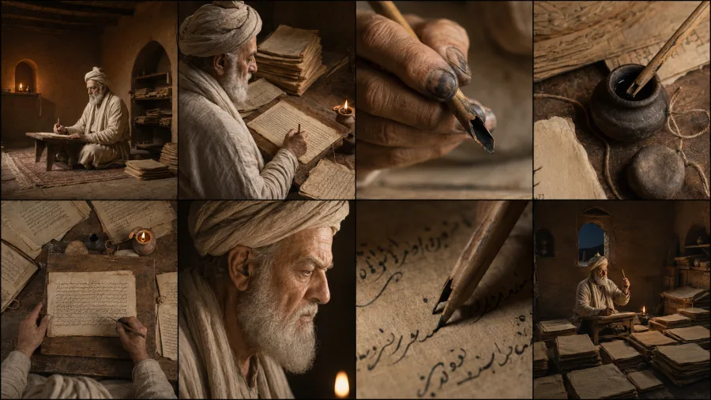
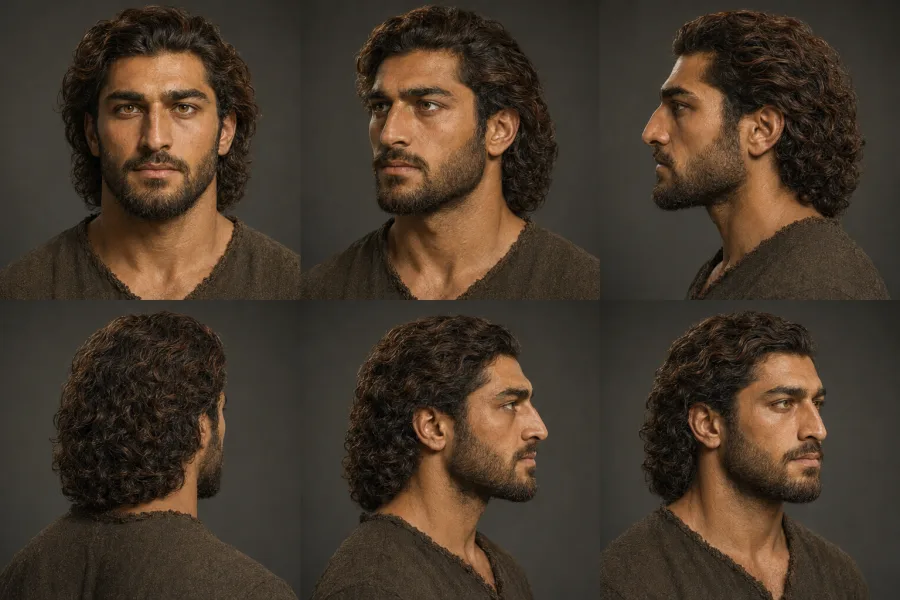
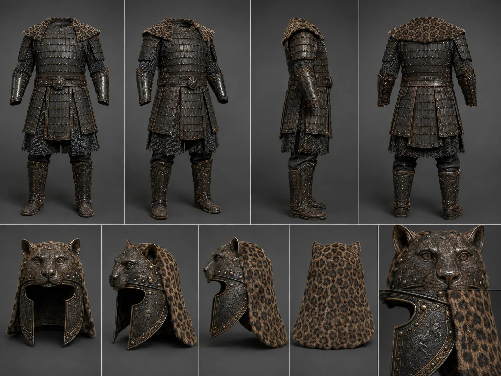

SETAEI / Cultural AI / Film + Game
SHAHNAMEH
Et tusen år gammelt epos, bygget om til et levende digitalt univers — med film, spill, karakterer og AI som produksjonsverktøy.
01 — Ideen
Ikke et museum.
En ny inngang.
Shahnameh er enormt, vakkert og kulturelt viktig — men for mange også langt unna hverdagen. Prosjektet mitt handler om å gjøre verket tilgjengelig uten å redusere det til pynt.
I stedet for å lage en side som forklarer alle konger, slektslinjer og historiske epoker, bygger vi innganger: en scene, en karakter, en konflikt, et spillvalg. Historien oppleves først. Researchen ligger under og sørger for at verden henger sammen.

02 — Filmen
The Son He Did Not Know
Rostam og Sohrab er kjernen: far og sønn møtes som fiender uten å kjenne sannheten før det er for sent.
Kortfilmen bruker den tragedien som en bro mellom Ferdowsis eget liv og fortellingen han skrev. Resultatet er ikke en illustrert Wikipedia-side, men en filmisk tolkning med kontinuerlige karakterer, rekvisitter og miljøer.
03 — Universet
Én verden.
Samme ansikter.
AI kan generere vakre enkeltbilder. Det vanskelige er å få én verden til å holde sammen gjennom dusinvis av scener.


Soul Cast
Ansikt, alder, fysikk og klær beskrives én gang og brukes konsekvent videre.
Continuity
Samme hus, marked, rustning og rekvisitter utvikles gjennom tid — ikke tilfeldig fra bilde til bilde.
Source first
Historie, tekst og ikonografi setter rammene. Der kildene stopper, merkes tolkningen som tolkning.
04 — Fra tekst til scene
Research må bli produksjon.
Det interessante arbeidet skjer mellom kilden og bildet.
Tekst, historisk kontekst, geografi, klær, relasjoner og dokumenterte detaljer.
Karakterark, objekter, miljøer og visuelle regler fryses før scenene bygges.
AI brukes som kamera- og produksjonsverktøy: framing, lys, bevegelse og performance.
Scener trimmes, rytme og lyd bygges, og kontinuitetsfeil fjernes i sluttarbeidet.

05 — Spillet
Filmen forteller én tragedie. Spillet lar deg gå inn i verden.
Shahnameh er også bygget som et spillunivers i RealGram — med helter, progresjon, valuta og en AI-forteller kalt Hakim.
Målet er ikke å lime “læring” oppå et spill. Historien er selve progresjonen. Spilleren møter karakterene, konfliktene og symbolene gjennom det de allerede gjør for å komme videre. Shahnameh blir derfor både kulturprosjekt og produktdesign.
06 — Hva prosjektet viser
AI er ikke stilen.
Det er verktøykassen.
Det viktigste resultatet er ikke hvor mange bilder som ble generert. Det er at film, spill, research og produkt kan dele samme univers.
Cinematic AI
Karakterkonsistens, miljø, kamera, motion og ferdig klipp.
Game system
Historie oversatt til mekanikk, progresjon og en levende AI-guide.
World building
Et kulturelt univers som kan leve på tvers av film, web, app og kampanjer.
SETAEI / Selected project
Fra epos til digital verden.
Shahnameh er fortsatt under utvikling. Det er nettopp poenget: én historie kan bli film, spill, karakterdesign, AI-forskning og produkt — uten å miste sin opprinnelse.